Location: Near View BGB Camp, Jaflong 3151 (about 300 yards from Jaflong Zero Point)
Staying near Jaflong is best to enjoy the Piyain River and Meghalaya hills in the morning.
Facilities: River View, Breakfast, Parking, WiFi, Family Room
Starting Price: Around BDT 4,453 per night for 2 adults
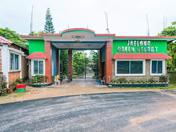
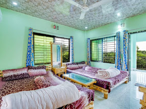
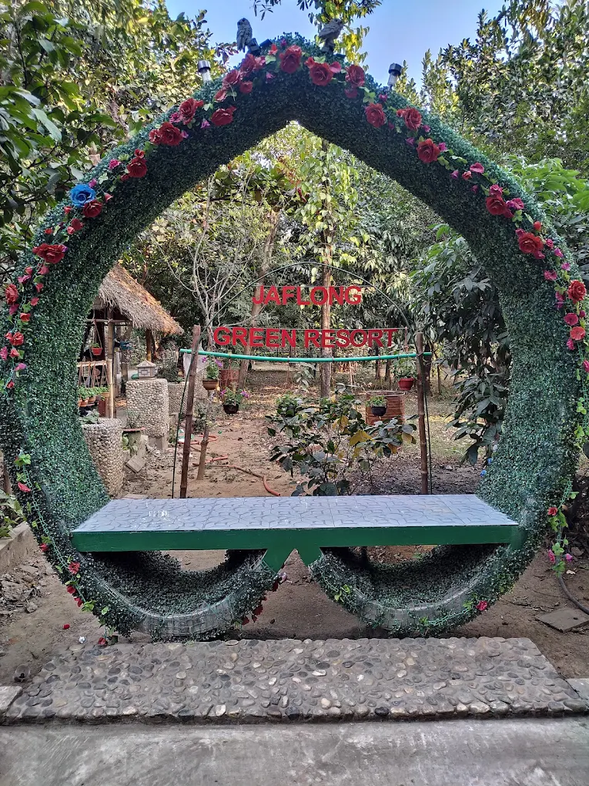
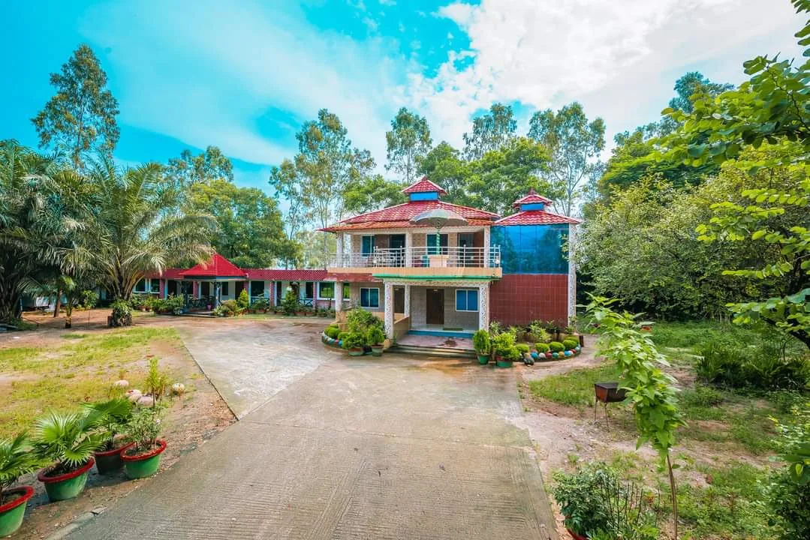
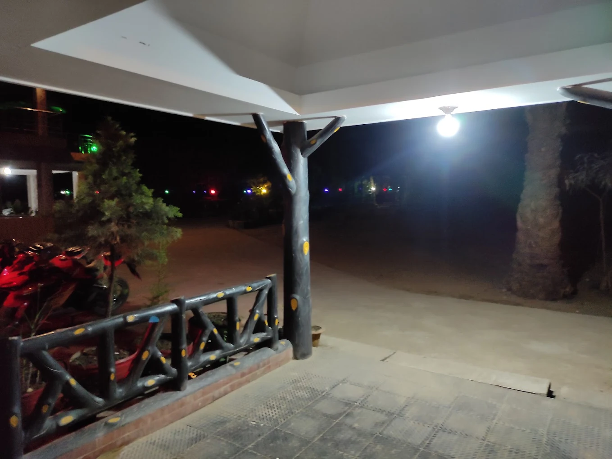
Location: Located in Gowainghat along the Swamp Forest route, a short walk from Ratargul Swamp Forest.
Staying near Ratargul is best to take a boat ride through the swamp forest in the morning.
Facilities: Boat Booking, Nature View, Family Room, Restaurant, Parking
Price: 3200 Taka / Night
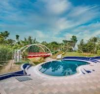
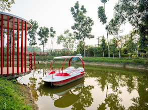
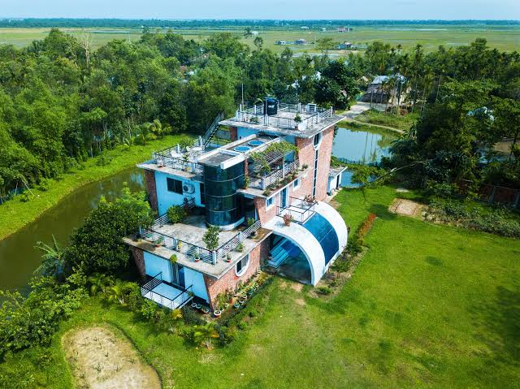
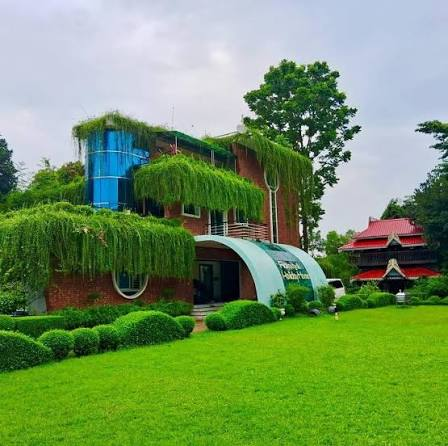
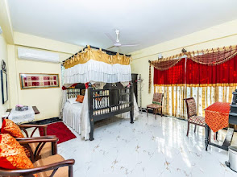
Location: Waves 1, Dargah Gate, Sylhet 3100 (near Hazrat Shahjalal Mazar)|
Distance: 38.8 km from Bichanakandi by road
Staying near Bichanakandi is best to enjoy the clear water, big stones and green hills.
Facilities: Family Room, Gym,Swimming,Restaurant, WiFi, Parking
Price:Economy Double Room.Starts at BDT 3,911 per night
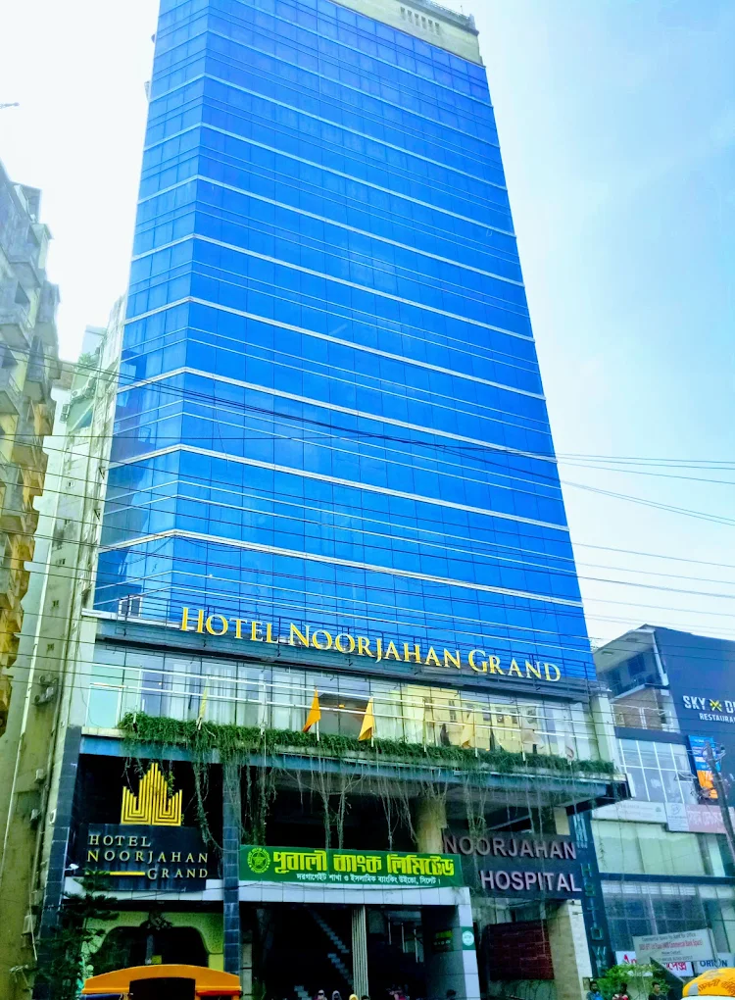
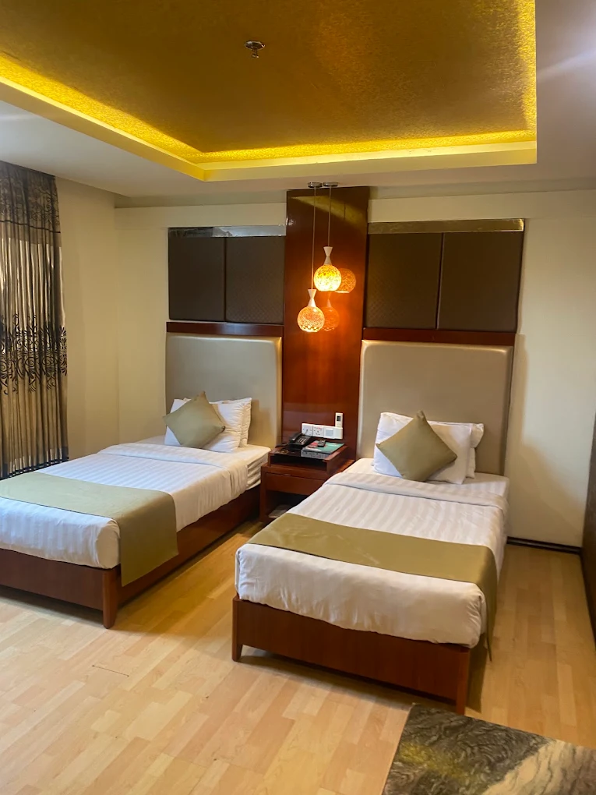
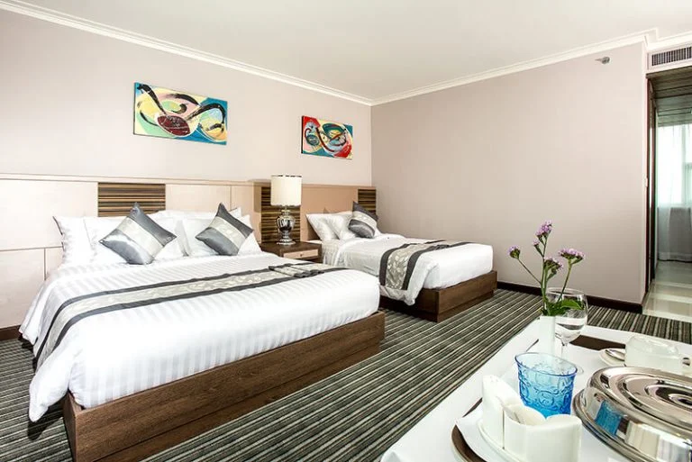
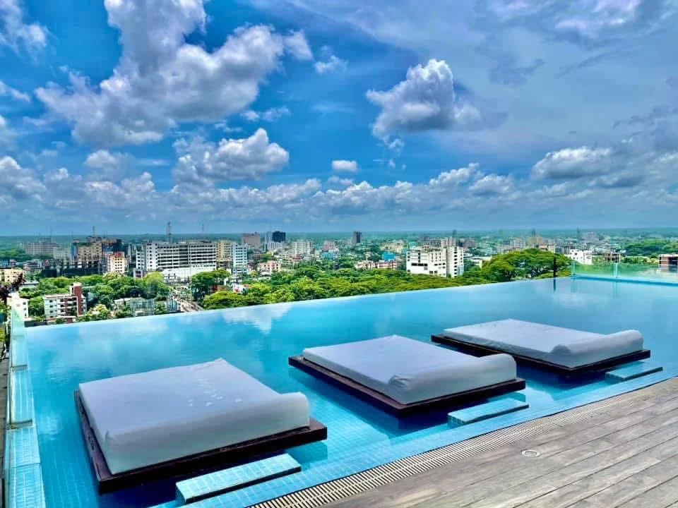
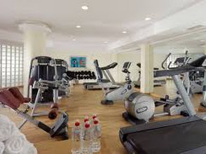
Location: Lala Khal Road, Jaintapur, Sylhet, along the Sari River near the Meghalaya border.| Distance from Place: 3 km
Staying near Lalakhal is best because the blue water looks most beautiful in the morning.
Facilities: River View, Swimming Pool, Boat Ride, Restaurant, WiFi
Price: 5000 Taka / Night
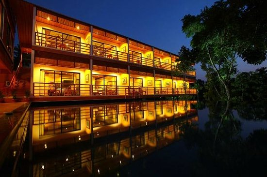
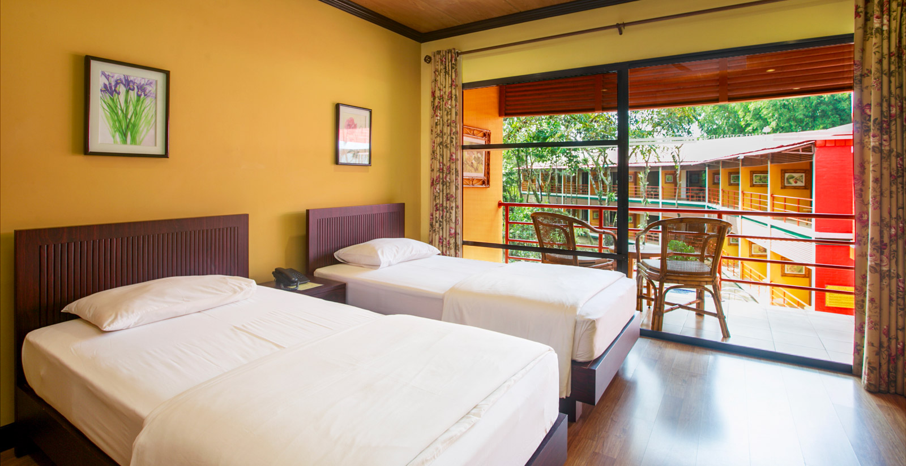
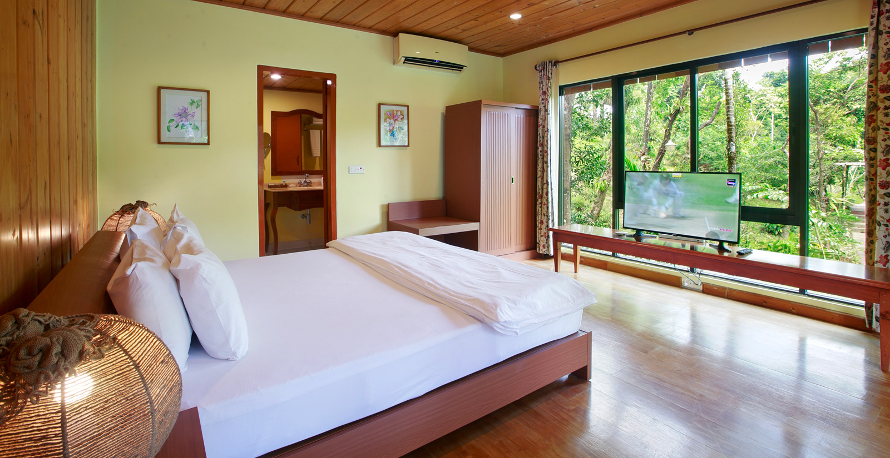
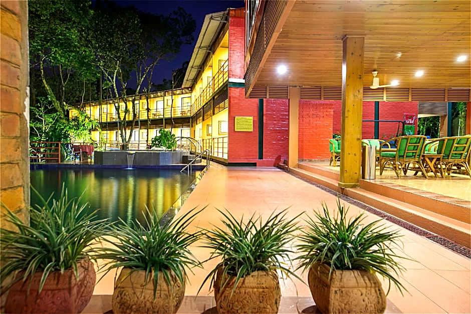
Location:Hotel The Glory is situated in Sadik Tower on Nayasarak Road in central Sylhet, close to your current area in Sylhet Sma.
|Distance from place: 43.7 km
Staying near Sada Pathor is best for family picnic and bathing in clear water.
Facilities: Family Room,Complementary Breakfast, Room,Restaurant, Parking, WiFi
Price: 3000 Taka / Night
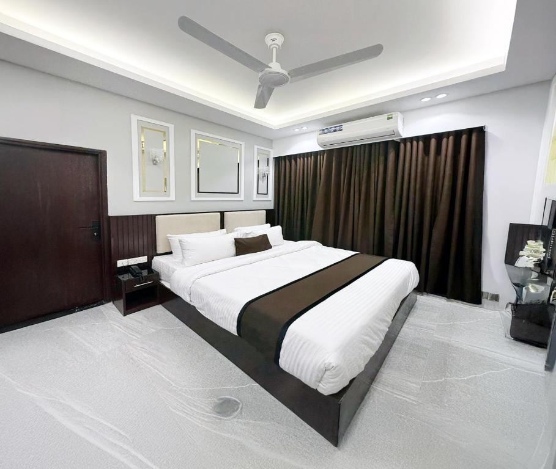
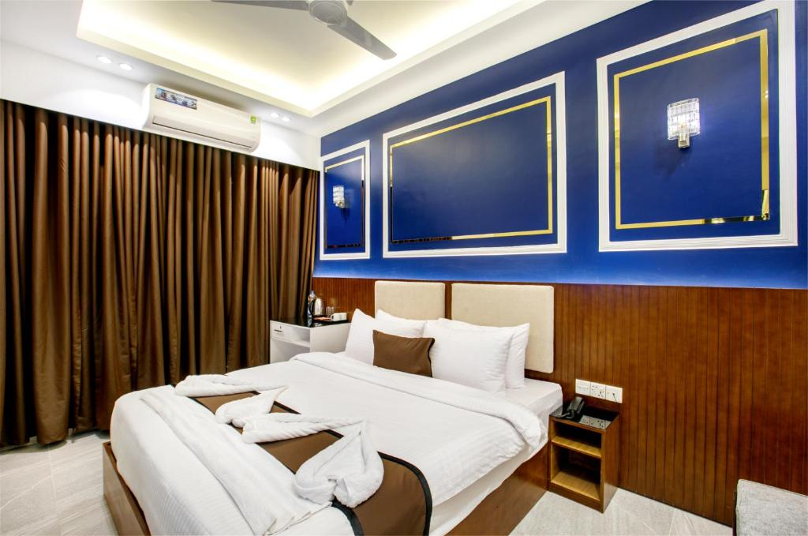
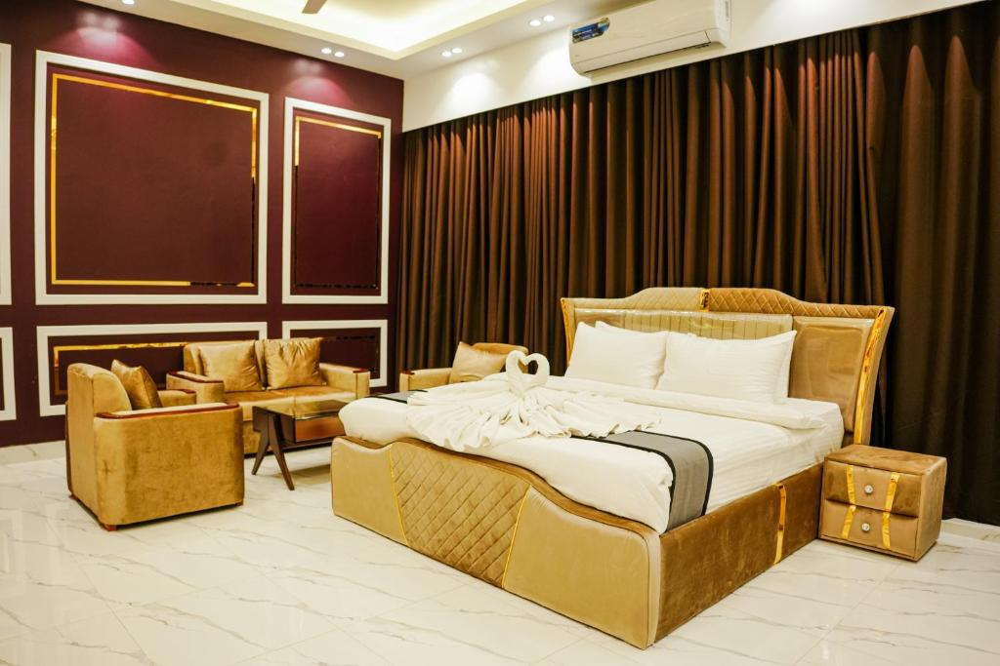
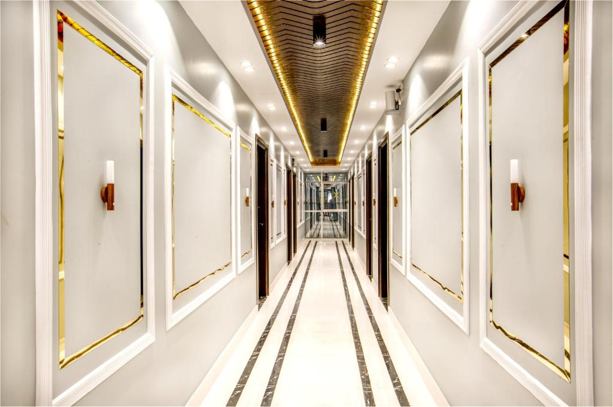
Location: Taltola Bazar, Kulaura Road (along the route toward Barlekha/Madhabkunda) | Distance from Place: 4 km
Staying near Madhabkunda is best to visit the waterfall early in the morning.
Facilities: Hill View, Forest View, Restaurant, Family Room, Parking
Starting Price: BDT 5,552/night.
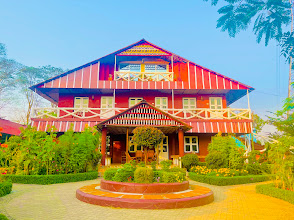
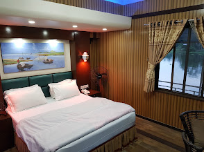
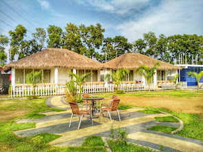
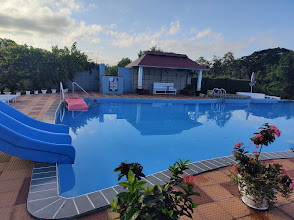
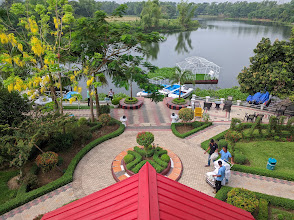